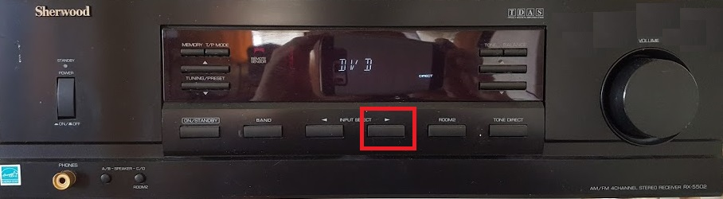
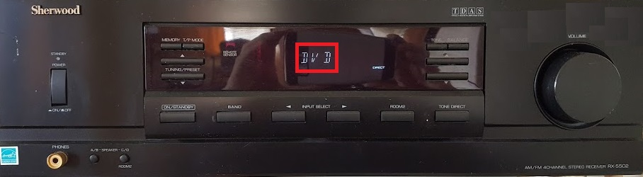
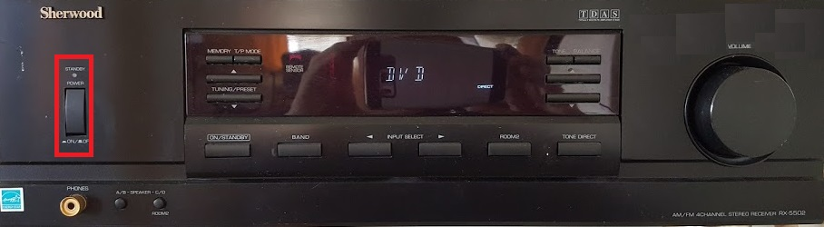
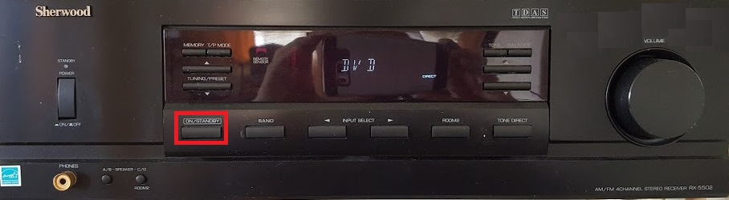
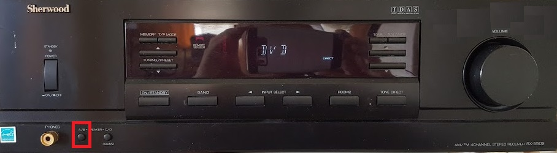

The living room stereo delivers the best sound in the house. It can be driven by your phone (or other bluetooth device)), the living room computer or the television, depending on its input setting. You can change the input by repeatedly depressing the input select button:


The quality of sound is noticeably better when it is driven by the computer.
This receiver is an overly complicated device which can be easily misconfigured into silence, so I recommend that you not touch it except to adjust the input selection.
Troubleshooting
Is it turned on? Unlike most rational receivers, this device is not so simple as to be simply on or off. In the images above, you can see that it is turned on because the status shows "DVD". If someone turns it off, the display will be completely dark. Turning it back on is a two-step process. First, the press the "standby power button":

At this point, the display will still be black but a red light is illuminated, indicating that the receiver is standing by. Now press the "on/standby" button to fully turn on the device:

Is the input correct? The status should show either "AUX", if you are controlling the receiver from the television, or else "DVD", if you are controlling the receiver from the living room computer. If it shows some other source, repeated press the "INPUT SELECT" button to cycle through the possible inputs until you get to "AUX" or "DVD":
Are the appropriate speakers turned on? If you repeatedly press the "A/B" speaker button, the device will cycle through states where speakers A and B are both turned off, where the A speakers are turned on, and where the B speakers are turned on. The status display temporarily shows the speaker state for a few seconds when you hit this button. The status you want is A/B/-/-.

Too much bass
This happens if the volume is not set to 60. For some reason, changing the voume on the stereo face only adjusts the volume going to the main speakers, but not to the subwoofer. So you should adjust the volume from the controlling device (e.g., your phone) instead.